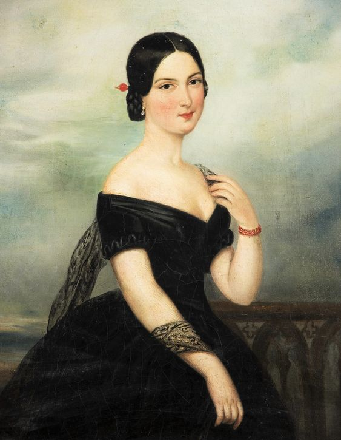

The nineteenth century was filled with war and revolution
From the Napoleonic wars in the beginning of the century, to the American civil war
Latin American independence, and the decline of the ottoman empire
The industrial revolution created loads of low-paying jobs
This century is filled with corsets, bonnets, top hat and huge skirts, for the rich, that is.
1795-1820
In this era women mostly wore dresses that were long, with an empire waistline. These styles differed greatly from those in the era's that surround it.
The styles were inspired by ancient greek and roman styles. And accentuated the natural waist.
Corsets were no longer used to create a desired shape or thin someone down, but were more used as bras, like we do in the present.
Everyone wore casual dress, even during formal occasion. Hairstyles were very curly over ears and forehead, long hair was often pulled back into buns.
Women still wore caps often, but for the first time in centuries women would leave the house without a cap, and not fear to be seen as a prostitute.
1820-1830
The fashion in this time steered away from the regency styles of the decade before. Here the full skirts and visible coresting on the natural waistline.
Waistlines lowered throughout the decade, and the skirts slowy turned into a cone shape. Skirts became more decorated, with tucks, pleats, ruffles, and even fur.
Later on in the decade women's sleeves began to turn into what would become trending in the 30's.
In the beginning of the decade women wore a lot of tight curls. The bun became a looped knot on top of the head and the curls became looser.
Women began wearing wide-brimmed hats covered in feathers or ribbon trim. Altough conservative women still wore caps.
1830-1840
This marks the beginning of the victorian era, that would last until 1900, after which it would transform into edwardian dress.
Women wore really big sleeves, above full cone-shaped skirts. Corsets were held in place with a lot of layers of stiff petticoat.
All the bulk on the dresses was to make the waist look smaller than it was. This is the only thing left over from the regency era.
Hair was usually worn in elaborate curls
1840-1850
Skirts moved from cone shapes to bell shapes. Skirts were now attached to the bodice. The sleeves have migrated from the elbowbs to the wrists.
Evening gowns had big off-the-shoulder flounces to the elbow, paired with opera-length gloves and sheer shawls.
Hairstyles were kept closer to the head, in tight buns or knots. Bonnets were smaller, and less heavily decorated.
1850-1860

In this decade the skirts continued to expand, with all the flounces usually tid to the waist with horsehair braids.
The crinoline was first ntroduced, allowing for the skirts to become even bigger, the flounces dissapeared making way for petticoats.
This era also marks the beginning of the victorian dress reform, also known as: Women began to wear pants for the first time.
1860-1870
Skirts have reached their ultimate width by the beginning of this decade. The skirts were so decorated the atucal fabric of the skirts was hardly visible at times.
The skirts were now also made out of panels, because a piece of fabric with a single back seam provided too much bulk at the waist.
The first chemical dyes were created, which allowed dresses to be a auve, or bright purple color.
1870-1880
Here, we see the fullness of the skirt move to the back of the dress, supported by bustles. Although this didn't last long, they did make a return in the mid 1880'
Sleeves were completely tight around the arm, and most dresses had square necklines.
Hair was often pulled back, in a knot or bun, with a fringe (or bangs) to accentuate the face.
1880-1890
In this decade the fulness is still at the back of the skirt, but rose from the back of the knee to the waist. Corsets were stiff and rigid, creating an s-shaped shilouette.
Evening gowns were low-necked and had no sleeves, and were worn with elbow or shoulder length gloves.
Choker necklaces and jewelled collars were also very fashionable in this time period.
1890-1900
This era is less "decorated" than the decades before it. Less crinolines, less bustles. Nevertheless the corset still prevailed.
Early in this decade women wore tight bodices, with the skirt falling naturally over the hips.
Later on in the decade the skirts became, as we call it now, a-line skirts. Corsets helped achieving an hourglass shape.
This decade the s-shaped figure was very fashionable.